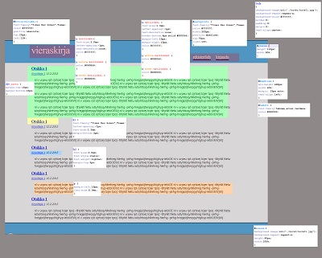

Toteuta html ja css (sivu.css) lukijan sivulle. Validoi peruskoodit.
Erota alku.php ja loppu.php sekä admin_alku.php ja admin_loppu.php ja tallenna ne kirjastot-kansioon.
Tallenna sivu.css kansioon tyyli.
Aluksi luodaan pelkkkä validi html-sivu css-tiedostoineen.
Kun sivu on valmis, validoitu ja testattu, jaetaan se sopiviin osiin. Tässä esimerkissä se on jaettu kolmeen osaan:
Tallenna seuraava kuva tyyli-kansion sisään alikansioon kuvat nimellä kuva01.jpg.
css:n ja html:n rakennetta esittää seuraava kuva:

body
{
background-image:url('./kuvat/kuva01.jpg');
background-repeat:repeat-x;
background-color:#ffffff;
border:0;
padding:0;
margin:0;
text-align:center;
}
/* tekstialueet*/
header{
height:110px;
width:80%;
}
#keskiosa {
min-height:600px;
width:80%;
margin: 15px auto;
text-align:left;
}
footer{
background-image:url('./kuvat/kuva01.jpg');
background-repeat:repeat-x;
height:80px;
width:100%;
}
#kotisivulinkki {
font-family:"Times New Roman",Times;
color:#ffffff;
position:absolute;
top:20px;
left:10%;
}
nav {
font-family:"Times New Roman",Times;
color:#ffffff;
width:500px;
position:absolute;
top:70px;
right:10%;
}
#teksti {
font-family:tahoma,arial,verdana;
color:#000000;
}
article {
margin-top:15px;
margin-bottom:15px;
}
/* tekstit ****************************/
h1 {
font-family:"Times New Roman",Times;
letter-spacing:-1px;
font-size:1.3em;
margin-bottom:3px;
}
h2 {
font-size:0.8em;
font-style:italic;
font-weight:lighter;
margin-top:3px;
}
p {
margin-left:15px;
font-size:0.9em;
}
/* kaikki linkit (linkki kotisivulle, navigointilinkit ja tekstissä olevat linkit*/
a.kotilinkki{
font-size:3.0em;
letter-spacing:-1px;
text-decoration:none;
color:#ffffff;
}
a:active.kotilinkki {
color:#000066;
}
a:hover.kotilinkki {
color:#000066;
}
a.navilinkki {
font-size:1.1em;
letter-spacing:-1px;
text-decoration:none;
border-bottom:4px solid #000066;
margin-left:10px;
margin-right:10px;
color:#ffffff;
}
a:active.navilinkki {
color:#000066;
}
a:hover.navilinkki {
color:#000066;
}
{kind=link}